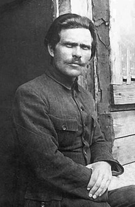

My Wikipedia
The free EncyclopediaNestor Ivanovych
Nestor Ivanovych Makhno[a] >(Ukrainian: Не́стор Івáнович Махно́, pronounced [ˈnɛstor iˈʋɑnowɪt͡ʃ mɐxˈnɔ]; 7 November 1888 – 25 July 1934), also known as Batko Makhno (батько Махно, lit. 'Father Makhno'),[b] was a Ukrainian anarchist revolutionary and the commander of the Revolutionary Insurgent Army of Ukraine during the Ukrainian War of Independence. He established the Makhnovshchina (loosely translated as "Makhno movement"), a mass movement by the Ukrainian peasantry to establish anarchist communism in the country between 1918 and 1921. Initially centered around Makhno's home province of Katerynoslav and hometown of Huliaipole, it came to exert a strong influence over large areas of southern Ukraine, specifically in what is now the Zaporizhzhia Oblast of Ukraine. Raised by a peasant family in the fervor around the 1905 Revolution, Makhno participated in a local anarchist group and spent seven years imprisoned for his involvement. With his release during the 1917 Revolution, Makhno became a local revolutionary leader in his hometown and oversaw the expropriation and redistribution of large estates to the peasantry. In the Ukrainian Civil War, Makhno sided with the Soviet Russian Bolsheviks against the Ukrainian nationalists and White movement, but his alliances with the Bolsheviks did not last. He rallied Bolshevik support to lead an insurgency, defeating the Central Powers's occupation forces at the Battle of Dibrivka and establishing the Makhnovshchina. Makhno's troops briefly integrated with the Bolshevik Red Army in the 1919 Soviet invasion of Ukraine, but split over differences on the movement's autonomy. Makhno rebuilt his army from the remains of Nykyfor Hryhoriv's forces in western Ukraine, routed the White Army at the Battle of Perehonivka, and captured most of southern and eastern Ukraine, where they again attempted to establish anarchist communism.
Nestor Ivanovych

Official portrait, 1921
more